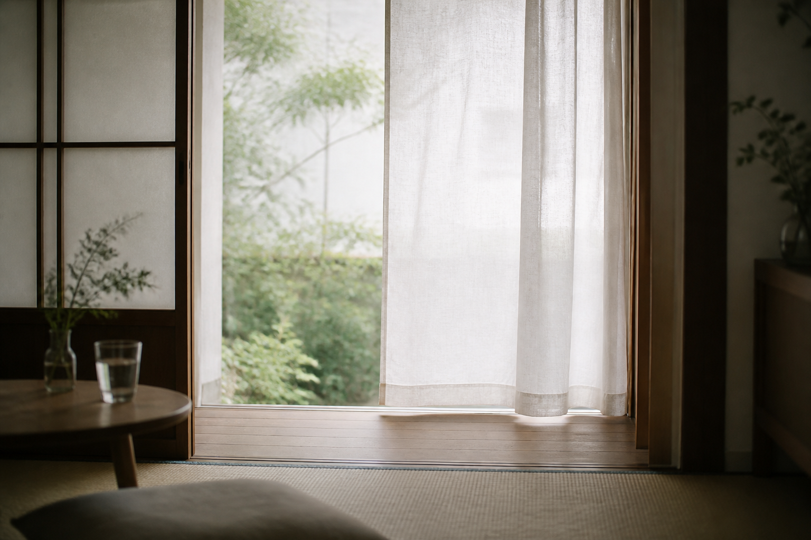

Scroll
Profile
Light and Days
Selected photographs, 2021-2026
把普通日子里的光，慢慢留在照片里。
我拍摄自然光、人像、家庭与旅途中的安静瞬间。照片不需要很用力， 它更像一阵风吹过窗帘后，留下来的温度。
我喜欢在事情刚刚发生之后按下快门。孩子回头的一秒、杯子旁边的影子、 午后走廊里的风，这些细小的东西会让一张照片拥有很长的余韵。
Works
Archive
About
Camera J 是一名以自然光、人像和生活纪实为主的摄影师。长期关注日常中的 亲密关系、安静风景，以及那些不被注意却一直存在的柔软时刻。